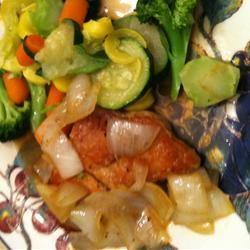

Soju Pork Chops

Description
A savory pork dish perfect for summer!
Ingredients
- 1 tablespoon olive oil
- 1 tablespoon butter
- 2 pork chops
- salt and ground black pepper to taste
- ½ lemon, juiced
- ¼ onion, sliced
- ½ cup Korean soju
Directions
- Heat the olive oil and butter in a skillet over high heat. Season the pork chops with salt and pepper, then place in the skillet in the hot oil; cook until browned on both sides, about 3 minutes per side. Reduce heat to medium and continue cooking until the pork is no longer pink in the center, about 6 minutes more. An instant-read thermometer inserted into the center should read 145 degrees F (63 degrees C).
- Remove pork chops from the skillet, and set aside. Add the sliced onion to the skillet; cook and stir until the onion has softened and turned translucent, about 5 minutes. Stir in the lemon juice and soju, scraping up any brown bits from the bottom of the skillet. Simmer until liquid as reduced, about 2 minutes. Season with salt and pepper, and drizzle the sauce over the pork chops for serving.